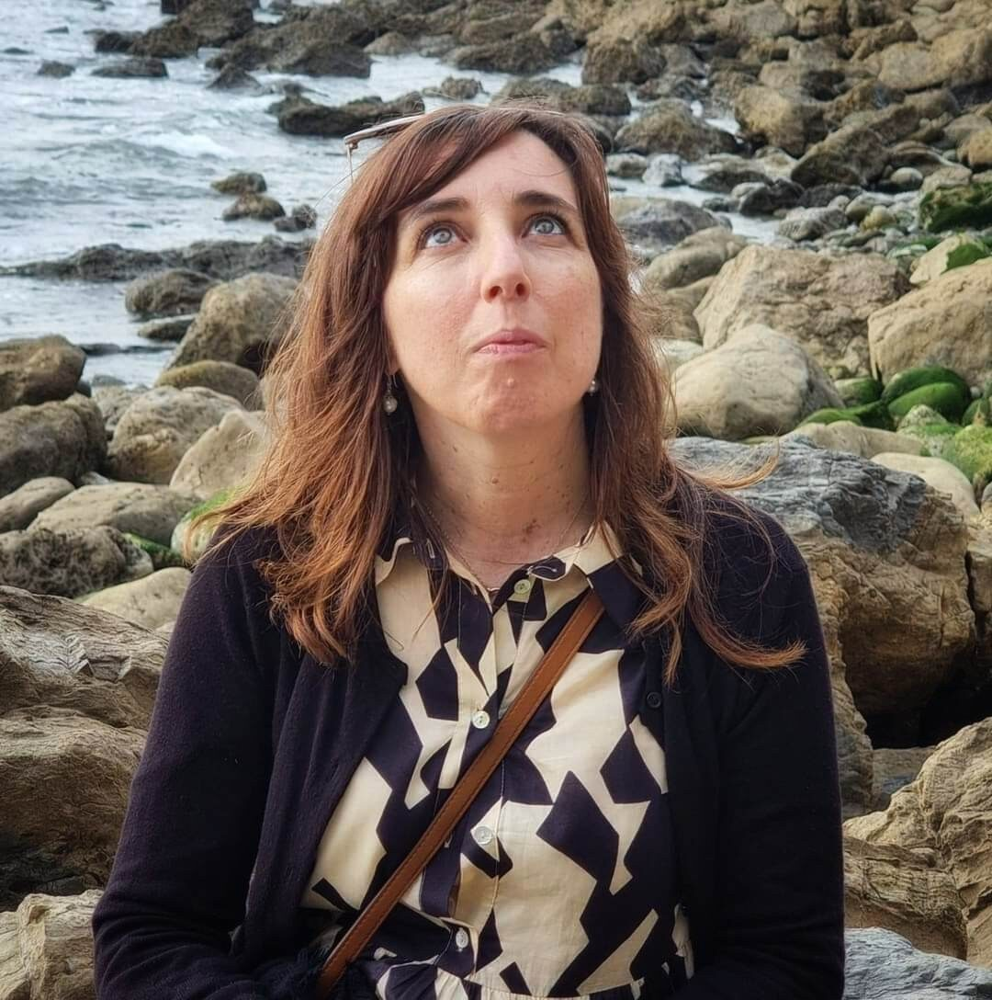

INFORMAÇÃO
Pesquisar e encontrar
Fornecimento de informação de referência (incluindo apoio aos trabalhos de casa)
Formação de utilizadores
Apoio aos utilizadores (presencial e online)
Um lugar para ler, pesquisar, aprender, criar, partilhar e estar.

PROFESSORA BIBLIOTECÁRIAA biblioteca escolar é um espaço essencial no ambiente educacional, onde os alunos podem expandir os seus horizontes e aprofundar os seus conhecimentos.
A nossa biblioteca está determinada em fornecer aos alunos as melhores ferramentas para o sucesso educativo, oferecendo uma vasta seleção de livros, revistas, jornais e outros recursos de informação. A nossa missão é ajudar os alunos a desenvolver as suas capacidades de leitura e pesquisa, promovendo o pensamento crítico.
Acreditamos que uma boa educação começa com o acesso a informações precisas e confiáveis, e trabalhamos para garantir que os alunos tenham acesso aos melhores recursos educacionais disponíveis, assim como para apoiar os docentes em todo o processo de ensino-aprendizagem.
Além disso, a nossa biblioteca é um espaço acolhedor e convidativo, onde os alunos podem estar à vontade para estudar, pesquisar e explorar informação e leituras de acordo com os seus interesses pessoais.
Estamos igualmente de portas abertas a toda a comunidade que nos queira visitar.
Descobre tudo aquilo que podes encontrar e fazer na Biblioteca Escolar de Manhente.
Fornecimento de informação de referência (incluindo apoio aos trabalhos de casa)
Formação de utilizadores
Apoio aos utilizadores (presencial e online)
Formação nas diferentes literacias (media, informação, leitura)
Iniciativas dinâmicas de leitura e escrita
Aconselhamento de leitura (individual e em grupo)
Serviço de empréstimo aos utilizadores
Encorajamento ao uso da coleção em todos os formatos
Empréstimo de tablets para sala de aula e trabalho autónomo
Disponibilização de computadores para uso no espaço da BE
Organização de oficinas e atividades criativas na área Makerspace
Organização de espetáculos para a comunidade, em articulação com as diferentes áreas disciplinares
Organização de palestras e sessões formativas em colaboração com entidades externas e com as diferentes áreas disciplinares
Facilitação do acesso a recursos exteriores à coleção de referência (empréstimo interbibliotecas)
Gestão técnica da coleção e aquisição de novos títulos
A BEMA está de portas abertas para alunos, professores e toda a comunidade.